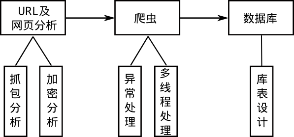

数据采集之Python爬虫实验
如果说算法是程序的灵魂，那么数据就是算法的灵魂。数据采集是数据工程的第一步，为了提高效率，目前在互联网上采集数据比较高效的方法就是爬虫了。今天就来爬一下《惊奇队长》豆瓣上的影评/review。
爬虫简介
数据可以挖掘潜在的价值，但是在挖掘之前需要有数据，否则再牛的算法也不会work。在一些具体的问题上，比如，我们可以收集各大网站上观众对于该电影的评价来判断电影的火热程度，结合其他的数据还可以估计票房等信息；又或者根据社交网络上人们对于股票市场行情的态度以及相关新闻，通过NLP处理来预测股价。那么，首先需要解决的问题就是如何获取数据。网络爬虫就是获取数据的一个重要手段，爬虫就好像一个全自动的机器人一直在浏览网页并将重要的信息收集起来，并按照一定的规则存储在相应的数据库或者文件内。数据收集好了，算法设计人员才可以做进一步的工作。
如果有网站数据的API接口，就不用写爬虫了；
爬虫获取的数据都是公开的数据，很多有价值的数据还是需要花重金购买。
开始实践
本次内容就是编写一个最简单的爬虫，实现豆瓣上电影的影评（或者叫做review），思路就是使用urllib库去模拟浏览器访问相关网页，再利用re库和正则表达式提取关键信息。
URL分析
首先，看一下豆瓣影评页的URL是否存在规律：浏览器打开豆瓣电影，逐个点击《惊奇队长》—> 惊奇队长的影评 · · · · · · ( 全部 1160 条 )，查看网址为：https://movie.douban.com/subject/26213252/reviews，网址中出现的数字应该是电影的编号，但是没有页码的信息，点击”后页”按钮，网址变成了https://movie.douban.com/subject/26213252/reviews?start=20，所以猜测start=20这个参数是控制页码的，多试几次，发现确实是这个规律。
那么，在代码中设置翻页的操作就可以通过for循环来写了:
1 | urlorg = "https://movie.douban.com/subject/26213252/reviews?start=" |
网页源码分析
查看《惊奇队长》影评页的网页源码，发现每一个影评都对应了一个id，而且每个id都对应了一个新的URL，想要查看完整的影评内容需要跳转到这个新的网页上进行查看；这些新的URL的构造也很有规律：https://movie.douban.com/review/10034121/最后的数字10034121就是这个review的id。通过网页源码的搜索（如下所示），可以发现data-rid="9371928" title="有用">可以唯一对应这个id，我们可以据此来设置正则表达式。
html 源码：
使用python 的re包接收正则表达式，(.*?)表示匹配项：
1 | pat = 'data-rid="(.*?)" title="有用"' #(.*?)部分即为id |
得到了每一个review的id之后，把它存在一个list内，我们就可以构造出每一个review的URL：https://movie.douban.com/review/+str(id)，打开其中一个review继续分析（我们的目标是把影评的内容拿到）；再次查看影评的网页源码，可以发现影评的题目可以通过<meta name="description" content="影评题目" />唯一确定，而影评的内容则在data-original="1">和<div class="copyright">之间，如下所示：
如此以来，我们便可以设置正则将这两个主要内容提取出来。python的re包接收正则表达式：
1 | pat2 = '<meta name="description" content="(.*?)" />' #影评的题目 |
编写代码
根据上面的信息，爬虫的主要代码部分已经呼之欲出了，完整代码请点击这里查看，爬取之前可以做一下浏览器模拟请求，最后爬下来的影评内容存放在一个文件中，以供后续使用。
1 | urlorg = "https://movie.douban.com/subject/26213252/reviews?start=" |
高级爬虫
这里所谓的高级爬虫就是网络爬虫在遇到各种各样的问题时，依旧可以正常工作。下图表示一个爬虫的工作流程，首先进行网页的源码分析，看看是否存在规律，接着编写爬虫代码，最后将爬取的数据（适合存在在数据库的数据）保存在数据库内。下面简单的分析几个问题，以下问题都是有解的。

- 网页抓包分析
静态网页直接查看网页源码就可以爬取内容了，而动态网页则是利用一些前端技术（比如js、css等）进行动态展示。此时需要对浏览器进行抓包分析，将真正的网址抓取出来，得到关键信息。抓包的工具有Fiddler等。 - 网站数据的加密、验证码
很多网站采取了防爬虫的措施，比如对网页源码进行加密（典型的例子：网易云音乐的评论）、访问过频繁需要填写验证码等。对于网页加密，需要仔细的对网站进行抓包分析，将加密方式破解就可以了（一般还是js文件在搞事情）；对于填写验证码，可以让爬虫在爬取时加一个sleep时间（或者使用图片识别技术）。 - 异常处理
爬虫的工作依赖网络，所以网络万一出现问题，爬虫得有相应的处理机制，例如尝试连接某个网页未果后要及时爬取下一个，而不是异常退出了；再比如爬虫异常推出重启后得在重启之前得位置接着爬取数据，而不是重头再来。 - 多线程
对于爬虫这种io密集型的操作，多线程确实会提高效率，但是python的GIL设计使其多线程其实是假的多线程，所以如果比较在乎效率，这里比较推崇的做法是go语言写的爬虫。 - 使用框架
使用框架的好处是可以省去很多麻烦的设置，少考虑一些简单的问题，相互传阅代码也比较通俗易懂，python中的scrapy框架使用的比较多。 - 数据库表的设计
如果数据需要存入数据库，则需要设计一下数据库、表；这样做的好处是后续的数据供大家使用非常方便快捷。
小结
- 网络上有很多数据值得深入的挖掘，获取数据是数据挖掘的第一步；
- 爬虫可以对网络的资源进行自动化获取，爬取数据之前需要对资源的获取进行仔细分析；
- 高级/工业级的爬虫需要考虑更多的问题，如：对加密网页内容的破解、抓包分析、爬虫的异常处理、数据存库等。
原文作者: Mun*
原文链接: https://kiddie92.github.io/2019/03/11/数据分析之Python爬虫实验/
许可协议: 知识共享署名-非商业性使用4.0国际许可协议